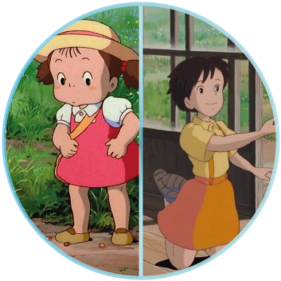
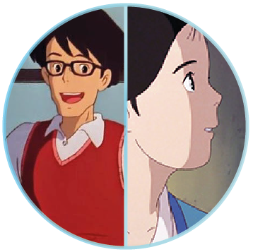
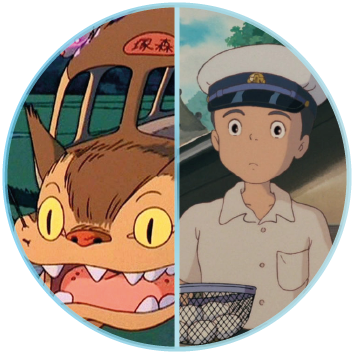

(草壁 メイ Kusakabe Mei?): La menor de las hermanas Kusakabe, de cuatro años de edad. Alegre y curiosa, gracias a ella descubrieron a Totoro. Debido a la ausencia de su madre, busca constantemente la atención de su hermana mayor.
(草壁 サツキ Kusakabe Satsuki?): Con once años de edad, es la hermana mayor de Mei, quien trata de cuidar de ella al mismo tiempo que intenta adaptarse a su nuevo entorno y asimila la enfermedad que sufre su madre
(草壁達夫 Kusakabe Tatsuo?): Es el padre de las niñas y marido de Yasuko. Trabaja en el departamento de arqueología y antropología de la Universidad de Tokio. Siempre se muestra alegre con sus hijas.
(草壁靖子 Kusakabe Yasuko?): La madre de las niñas y esposa de Tatsuo. Debido a que padece de tuberculosis es trasladada a un hospital rural. Su marido y sus hijas se mudan al campo para estar más cerca de ella.
(猫バス Nekobasu?): Tal como su nombre indica, se trata de un espíritu-gato (bakeneko) que ha tomado la forma de un autobús. Acude a la llamada de Totoro, quien lo utiliza como medio de transporte.Entre otras peculiaridades: puede volar, posee seis pares de patas y poderes que le permiten desplazarse a velocidades increíbles sin ser visto.
(大垣寛太 Ōgaki Kanta?): Un chico vecino de los Kusakabe, de la misma edad que Satsuki. A causa de su timidez, parece no llevarse bien con las chicas. Este personaje comparte la afición de Miyazaki por los aeroplanos.